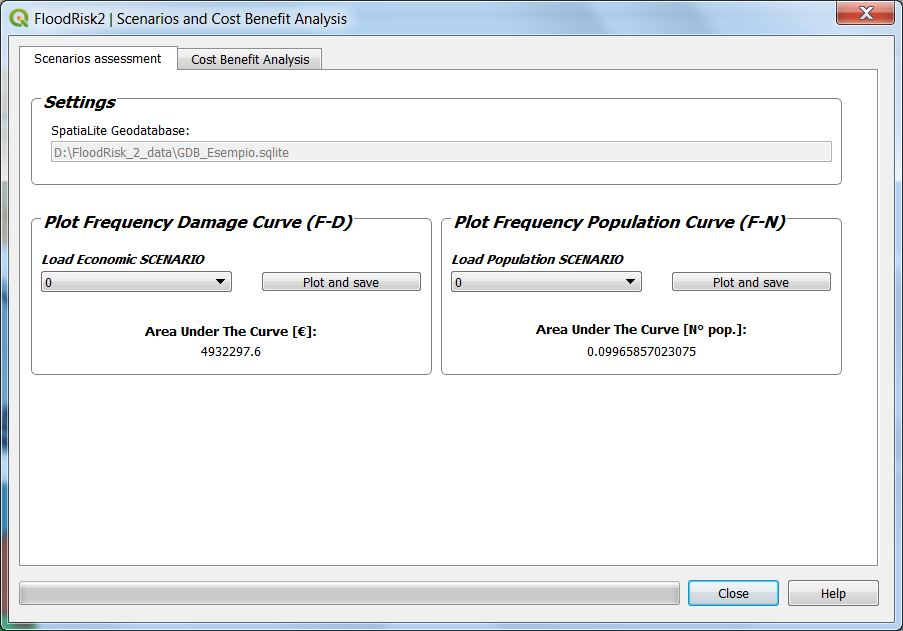
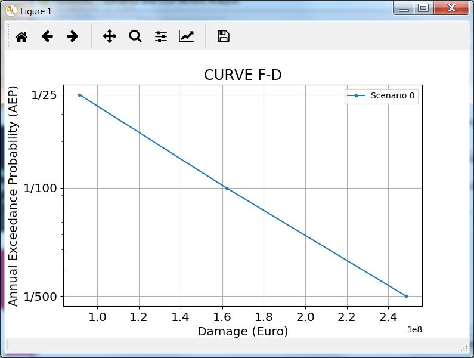
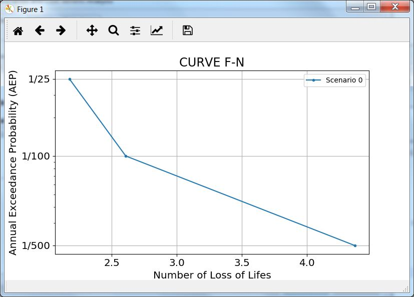
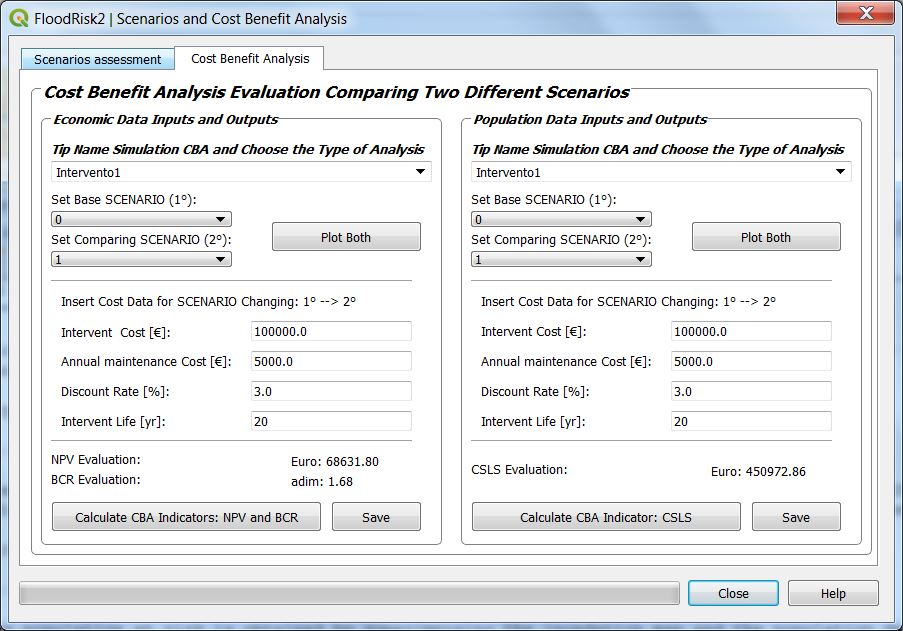
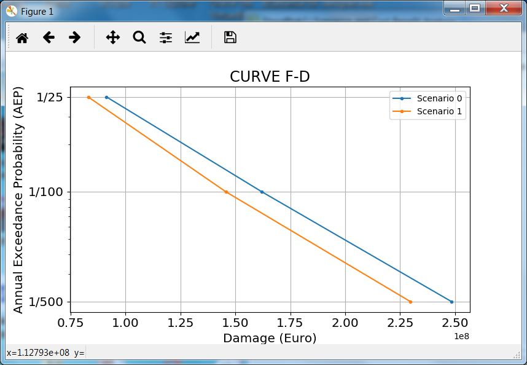
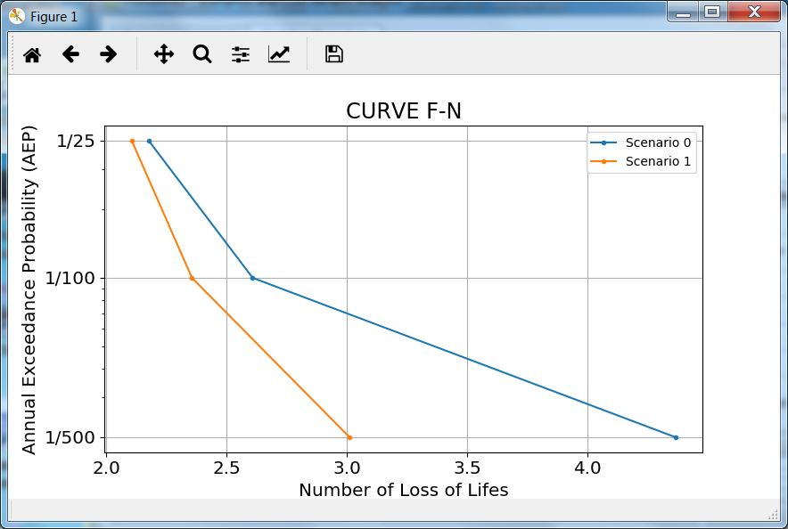

Scenarios and Cost Benefit Analysis¶
The Scenarios and Cost Benefit Analysis window allows you to it allows to visualize the frequency curves of the various scenarios and to compare two of them with two different scenarios by performing a cost benefit analysis.
The frequency curves window¶

from the frequency curves window it is possible to display, for each scenario, the two curves:
Frequency Damage Curve (F-D)
Frequency Population Curve (F-N)
 
Cost benefit analysis window¶

The cost benefit analysis window allows you to perform a Cost Benefit Analysis Evaluation Comparing Two Different Scenarios. The cost benefit analysis is carried out independently for the economic risk and for the risk to the population. To make the comparison it is necessary to select the two scenarios to compare.
You can view the comparison chart of the two frequency curves:
 
The area difference under the frequency curves represents the benefit of the intervention which is assessed as damage reduction.
From the interface it is possible to enter the data relating to the cost of the intervention which are:
Intervent Cost (€)
Annual maintenance Cost (€)
Annual maintenance Cost (€)
Intervent Life (yr)
With these data it is possible to calculate the parameters of the cost-benefit analysis which are:
NPV : Net Present Value (€)
BCV : Benefit-Cost Ratio
CSLS : Cost per Statistical Life Saved (Euro/life/year)